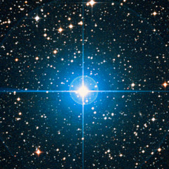

Коллекции:
Солнечная система
Звезды
Экзопланеты
Звездные скопления
Коричневые карлики
Галактики
Нейтронные звезды и черные дыры
Имя,
Расстояние,
Масса

QV Телескопа Ab
340 ± 20
≥ 5.0 ± 0.4
Ссылки
Stellar black hole
List of black holes
Binary black hole
List of nearest black holes
First observation of gravitational waves
,
List of gravitational wave observations
Tolman–Oppenheimer–Volkoff limit
: List of most massive neutron stars, List of least massive black holes.
Quark star
.
Intermediate-mass black hole
Supermassive black hole
,
List of most massive black holes
Предел Бекенштейна
. Вычисляемая по формуле Бекенштейна и Хокинга энтропия трёхмерных чёрных дыр точно насыщает предел Бекенштейна.
V616 Mon
Видео:
Черные дыры. Вводная лекция
,
Одиночные черные дыры звездных масс
,
Рентгеновские двойные (Часть1)
,
Рентгеновские двойные (часть 2). Системы с черными дырами
.
10 ближайших чёрных дыр